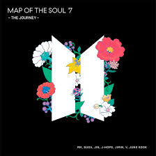

teXTO CON POSICIONAMIENTO RELATIVE en un bloque inline -----------------------------------

clase del 1ro de abril
párrafo agrandado usando px
párrafo agrandado usando %
Este es un párrafo
con una etiqueta br que es un elemento HTML vacío


imagen local de mi carpeta imagenes

| Curso | Horas | Docente |
|---|---|---|
| lengusaje para dss | 7.5h | Jhon Bravo |
| introducción a la investigación | 5h | Diego |
Carrera de arquitectura de sistemas en Certus
TEXTO perteneciente a una clase del contenedor div
este texto está diseñado con un identificador
teXTO CON STATIC
2do teXTO en misma linea
teXTO CON STATIC
2do teXTO en misma linea
teXTO CON POSICIONAMIENTO RELATIVE en un bloque inline -----------------------------------
2do teXTO en misma linea
Ejemplo de posicionamiento RELATIVO La Fuerza Aérea del Perú (FAP) es una institución, con calidad de órgano ejecutor, dependiente del Ministerio de Defensa. Es unidad ejecutora del Ministerio de Defensa. La FAP controla, vigila y defiende el espacio aéreo del país, que cubre su territorio y el mar adyacente hasta el límite de las doscientas millas, de conformidad con la ley y con los tratados ratificados por el Estado, con el propósito de contribuir a garantizar la independencia, soberanía e integridad territorial de la República.
teXTO CON POSICIONAMIENTO RELATIVE en un bloque inline -----------------------------------

2do teXTO en misma linea
TEXTO CON POSICIONAMIENTO ABSOLUTO
IMAGEN ES ABSOLUTE AL DIV RELATIVE


El escudo del Perú es el símbolo nacional heráldico oficial del Perú, el cual es empleado por el Estado peruano y las demás instituciones públicas del país. A lo largo de su historia, tuvo dos escudos nacionales; el primero adoptado el 21 de octubre de 1821; el segundo fue adoptado el 25 de febrero de 1825, y modificado el 31 de marzo de 1950. Entre los años 1836 y 1839, el Perú estuvo dividido en dos estados: el Estado Nor-Peruano y el Estado Sud-Peruano, los cuales junto con el Estado Boliviano conformaron la Confederación Perú-Boliviana; los escudos de los tres estados constituyeron el Escudo de Armas de la Confederación. El escudo del Perú es el símbolo nacional heráldico oficial del Perú, el cual es empleado por el Estado peruano y las demás instituciones públicas del país. A lo largo de su historia, tuvo dos escudos nacionales; el primero adoptado el 21 de octubre de 1821; el segundo fue adoptado el 25 de febrero de 1825, y modificado el 31 de marzo de 1950. Entre los años 1836 y 1839, el Perú estuvo dividido en dos estados: el Estado Nor-Peruano y el Estado Sud-Peruano, los cuales junto con el Estado Boliviano conformaron la Confederación Perú-Boliviana; los escudos de los tres estados constituyeron el Escudo de Armas de la Confederación. El escudo del Perú es el símbolo nacional heráldico oficial del Perú, el cual es empleado por el Estado peruano y las demás instituciones públicas del país. A lo largo de su historia, tuvo dos escudos nacionales; el primero adoptado el 21 de octubre de 1821; el segundo fue adoptado el 25 de febrero de 1825, y modificado el 31 de marzo de 1950. Entre los años 1836 y 1839, el Perú estuvo dividido en dos estados: el Estado Nor-Peruano y el Estado Sud-Peruano, los cuales junto con el Estado Boliviano conformaron la Confederación Perú-Boliviana; los escudos de los tres estados constituyeron el Escudo de Armas de la Confederación.

La DIGEMID es una institución técnico normativa que tiene como objetivo fundamental, lograr que la población tenga acceso a medicamentos seguros, eficaces y de calidad y que estos sean usados racionalmente, por lo cual ha establecido como política: Desarrollar sus actividades buscando un mejor servicio a los clientes externos y partes interesadas. Aplicar la mejora continua en cada uno de sus procesos. Establecer y mantener un Sistema de Gestión de la Calidad basado en el cumplimiento de la norma ISO 9001:2015 y la legislación vigente. Proporcionar a los trabajadores capacitación y recursos necesarios para lograr los objetivos trazados.
VOLVER AL INICIO